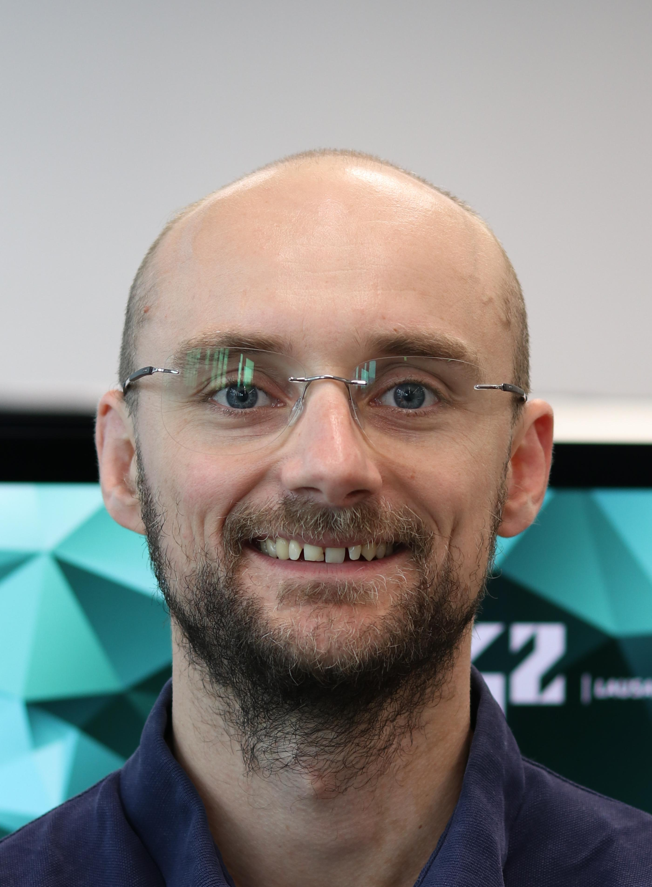

Mission freelance
Février 2026
Neuralia
Création d’un pipeline qui segmente les textes issus de pages web, de tableurs et de documents PDF ou Word pour alimenter des applications RAG.
- postgreSQL
- fastAPI
- Nextjs

Après dix ans comme pharmacien d’officine, je me suis reconverti dans le développement informatique à l’École 42 Lausanne. J’ai terminé le tronc commun en 2024, puis passé un an chez Atelier Éveil comme stagiaire développeur full-stack. Je travaille aujourd’hui sur les projets de spécialisation qui mènent à une équivalence bachelor et je cherche un deuxième stage d’au moins six mois.
Février 2026
Neuralia
Création d’un pipeline qui segmente les textes issus de pages web, de tableurs et de documents PDF ou Word pour alimenter des applications RAG.
Septembre 2024 — Septembre 2025
Atelier Éveil
Mise en place d’une chaîne de traitement reliant une base de données à un tableau de bord interactif.
2017 — Août 2024
Groupe Sunstore / Amavita et BENU en Suisse
Délivrance des médicaments, vérification des prescriptions et accompagnement des patients.
2014 — 2017
Pharmacies indépendantes en Haute-Savoie
Délivrance des médicaments, vérification des prescriptions et accompagnement des patients.
Septembre 2025 — En cours…
École 42 Lausanne
Parcours de spécialisation en développement applicatif menant à une équivalence bachelor.
Septembre 2022 — Juin 2024
École 42 Lausanne
Après l'épreuve d'admission (la piscine !), j'ai suivi le tronc commun en parallèle de mon métier de pharmacien. Je l'ai validé en juin 2024.
2007 — 2014
Faculté de Pharmacie de Poitiers
Études de pharmacie menant au diplôme d’État de docteur en pharmacie.